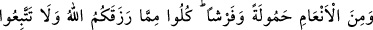
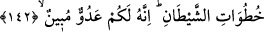
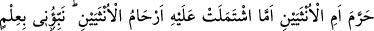
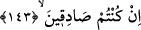

edilmiştir.[173]
Bir haberde: “(Tasadduk etmeye) geçimini sağlamakla mükellef olduklarından
başla.”[174] buyurulmuştur.
Buradaki “israf etmeyin” hitabının devlet başkanlarına olduğu da söylenmiştir. Yani,
(vergi toplarken) hakkınızdan fazlasını almayın, demektir.
“Çünkü O, israf edenleri sevmez.”, onların yaptıklarından razı olmaz.
142. Hayvanlardan yük taşıyanı ve tüyünden döşek yapılanları yaratan O’dur.
Allah’ın size verdiği rızıktan yeyin, şeytanın ardına düşmeyin; şüphesiz o sizin için
apaçık bir düşmandır.
“Hayvanlardan yük taşıyanları” üzerlerine yük yüklenenleri “ve yere serilenleri”
yani boğazlanmak için yatırılanları veya yününden, tüyünden ve kılından döşek
yapılanları “yaratan O’ dur.”
“Allah’ın size verdiği rızıktan yeyin.” Yani, Allah’ın size rızık olarak verdiklerinin
bazısından, yani helâl olanından yeyin.
Burada onların yaratılmasının insanlar için ve onların menfaatı için olduğu
açıklanmaktadır.
Câhiliyye Araplarının putlara adanan “sâibe” hayvanlarından ve benzerlerinden yük
taşıma ve üzerine binme gibi kendilerine haram kıldıkları faydalara temas edilmemiştir.
Faydalanma konusunda sadece “yeme” zikredilmiştir. Çünkü yemek, onlardan istifade
yollarının en büyüğü, helâllik ve haramlıkla ilgili olan kısmıdır.
“Şeytanın adımlarını izlemeyin.” Haramlar ve helaller hususunda şeytanın size telkin
ettiği yola girmeyiniz. Çünkü o sizi ancak günahlara çağırır. “Zîrâ o, sizin için apaçık
bir düşmandır.” Düşmanlığı apaçık ortadadır. Nitekim atanız Adem (a.s.)’a
düşmanlığını açıkça göstermiştir.
143. (Dişi ve erkek olarak) sekiz eş yarattı: Koyundan iki, keçiden iki... De ki: O,
bunların erkeklerini mi, dişilerini mi, yoksa bu iki dişinin rahimlerinde bulunan